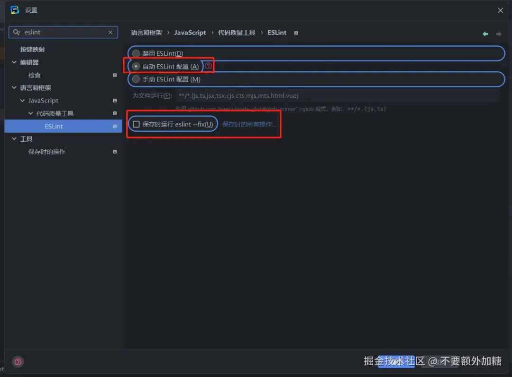
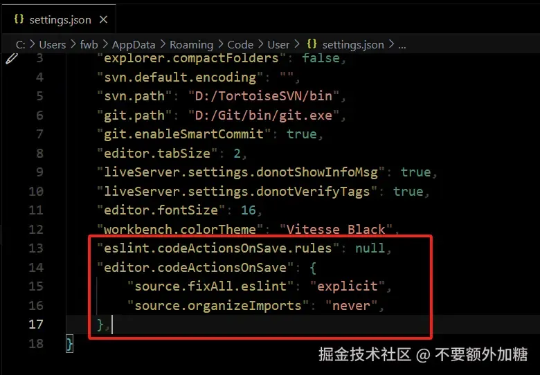
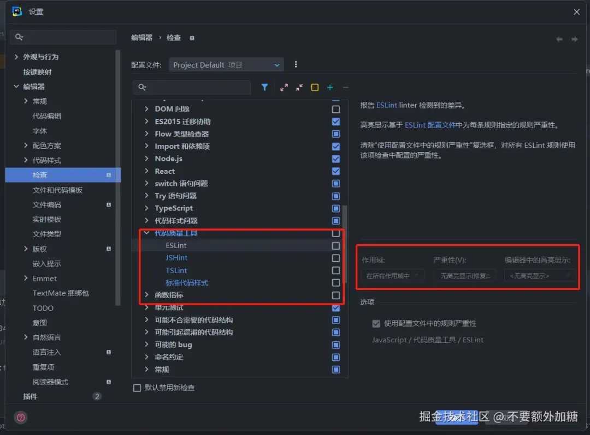
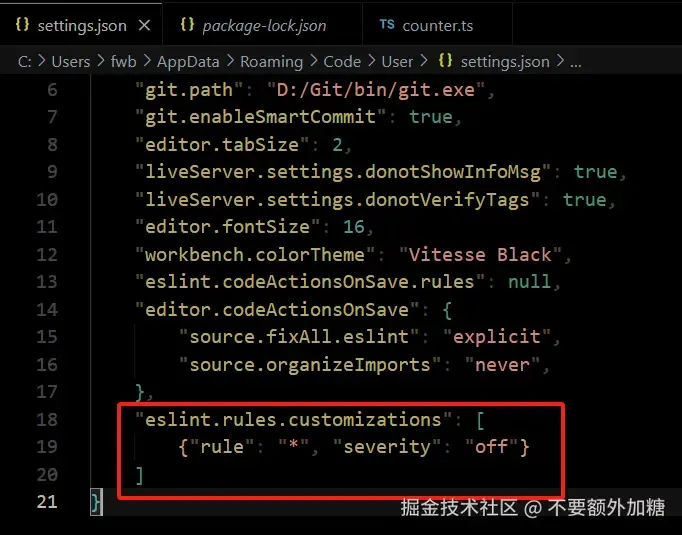

在学习使用 @antfu/eslint-config 配置之前，我们先来了解一下 ESLint v9 ，为什么这么版本一经发布就引起了前端圈的热议。ESLint v9 带来了多项 Breaking Changes （破坏性更新） ，对于用户来说新版本的迁移带来了更多的调整，官方文档中也发布了迁移指南。
在 ESLint v9 中，扁平化配置成为了新版本中的默认配置。早在 2019 年的版本中就提出了扁平化配置的理念以及实现，在 v9 版本中以及成为默认配置，有兴趣的小伙伴可以在官网文档中了解更多扁平化配置详情。
默认情况下，ESLint CLI 将搜索 eslint.config.(js | cjs | mjs) 而不是 .eslintrc.* 文件。如果未找到 eslint.config.js 文件，CLI 会将其视为错误，并且不会运行。
如果你想使用 .eslintrc.*，你需要将 ESLINT_USE_FLAT_CONFIG 环境变量设置为 false。执行此操作时，您将在控制台中收到弃用警告。
传统格式 .eslintrc.json
{
"extends": [
"eslint:recommended",
"plugin:@typescrit-eslint/recommended"
],
"plugins": [
"vue",
"n"
],
"rules": {
"@typescript-eslint/no-unused-vars": "off"
},
"overrides": []
}
扁平化配置 eslint.config.js
import typescript from "@eslint-typescript/eslint-plugin";
import eslint from "@eslint/js";
import n from "eslint-plugin-n";
import vue from "eslint-plugin-vue";
export default [
eslint.configs.recommended,
...typescript.configs.recommended,
{
plugins: {
vue,
node: n,
},
rules: { "@typescript-eslint/no-unused-vars": "off" },
},
];
为了不断减少 ESLint 的安装大小，从 ESLint 的核心中删除大部分格式化程序。如果你目前正在使用这些格式化程序，则需要安装独立包以用于 ESLint v9。
以上只列举了三个对于普通开发者来说最重要的三个破坏性更新，如果你想了解更多，可以从文档中的迁移指南处了解。
接下来，轮到我们的主角登场。我们先来看看，antfu 对他这个插件的描述。大家也可以到插件仓库查看说明文档。
自动修复格式（旨在在 「没有」 Prettier 的情况下独立使用）
合理的默认值，最佳实践，只需一行配置
专为 TypeScript、JSX、Vue、JSON、YAML、Toml、Markdown 等而设计。开箱即用。
固执己见，但非常可定制
ESLint Flat 配置，轻松编写！
可选的 React、Svelte、UnoCSS、Astro、Solid 支持
「样式原则」：最小读取，稳定差异，一致
排序的导入，悬空的逗号
单引号，无分号
使用 ESLint Stylistic （ESLint v9 中放弃了大部分的样式格式化功能，这是 antfu 自行组织的代码格式化插件仓库）
默认遵循 .gitignore
需要 ESLint v9.5.0+
使用 CLI 工具
npm dlx @antfu/eslint-config@latest
或手动安装
npm i -D eslint @antfu/eslint-config
在根目录下创建 eslint.config.mjs
import antfu from "@antfu/eslint-config";
export default antfu();
在 package.json 中添加 script
"scripts": {
"lint": "eslint .",
"lint:fix": "eslint . --fix"
},
lint：用于进行 ESLint 语法检查；
lint:fix：用于修复 ESLint 语法错误
澄清一下：其实 ESLint 的编译速度还是挺快的，是我的老电脑内存不太够！
为了让编辑器能够帮助我们实时修复 ESLint 带来的语法问题，我们可以借助编辑器的保存时自动执行 npm run lint:fix。但是受不住我们的一些 善良 同事，新项目拉下了先把 ESLint 禁用了，提交时直接把所有有语法问题的代码给提交了，这时候需要使用到后面提到的 husky 钩子，防一手 善良 同事，毕竟编辑器的行为与个人有关。
「WebStorm」
「VSCode」
「固执己见 的插件：antfu 称插件最初只是自己的私人定制，但在业界能被越来越多的人使用，以及认可。插件的风格并不适合所有的人以及企业，我们可以根据自己的项目需求进行 定制。」
import antfu from "@antfu/eslint-config";
export default antfu({
// 设置项目的类型，默认为 app
type: "lib",
// 开始代码样式格式化
// stylistic: true,
// 或者你可以更加细粒度的设置
stylistic: {
indent: 2, // 4, or 'tab'
quotes: "single", // or 'double'
},
// TypeScript 和 Vue 是自动检测的，你也可以显式启用它们
typescript: true,
// vue: true,
// 规则覆盖
vue: {
overrides: {
"vue/operator-linebreak": ["error", "before"],
},
},
// 如果没有限制文件类型，则会为每一个文件进行规则重写
overrides: {},
// 关闭对 JSON 和 YAML 的支持
jsonc: false,
yaml: false,
// 忽略某些文件或目录
ignores: [
"**/fixtures",
// ...globs
],
// 使用外部格式化程序来格式化 ESLint 尚无法处理的文件
// 需要借助外部插件 eslint-plugin-format
// 因此需要安装插件，否则会报错
// 运行 npx eslint 会提示你缺少的插件
formatters: {
css: true,
html: true,
markdown: true,
},
// eslint-config 只对 Vue 和 TypeScript 有天然的支持
// 如果你需要对第三方框架进行支持，需要自行开启
// 开启后 运行 npx eslint 会提示你缺少的插件
// 如 React Svelte Astro Solid UnoCSS
// react: true,
});
「command」
插件还提供触发器，我们能使用注释的方法，对特定的内容进行格式化（注意三斜杠）。
to-function：将箭头函数转换为普通函数
to-arrow：将普通函数转换为箭头函数
to-for-each：将 for-in/for-of 循环转换为 .forEach（）
to-for-of：将 .forEach（） 转换为 for-of 循环
keep-sorted： 对对象/数组/接口进行排序
「错误样式」
有一天我问小朱，“你为什么不用 ESLint，有统一的代码风格看起来不是很舒服嘛，还有帮助于编码”。
小朱：“ ESLint 的报错太烦了，整屏红色的波浪线密密麻麻，看起来让人想去世”。
我：“哥们，你 2：1 吧！这种编辑器行为是可以关，你尽管写，后面保存的时候统一格式化一下就好咯”。
小朱：“还可以这样，你真是我滴神”。说完，他就给我跪下了。
「WebStorm」
「VSCode」
大家是否会觉得插件将所有的规则都封装底层，我们并不知道这个插件具体的规则，或许我们还需要去查看文档甚至是源代码。神奇的 antfu 为此也是打造了一个 ESLint Config Inspector ：ESLint 配置检查器，来帮助我们检查所有的 ESLint 规则。
「使用」
npx @eslint/config-inspector@latest
# 或者
eslint --inspect-config
运行成功后，会帮助我们自动起一个服务，访问 http://localhost:7777/ 即可查看。
在这里你可以看到每一个配置的规则、使用到的插件、以及所作用的文件。
你也可以在 Rules 选项页查看到所有的规则，包括在那个插件的规则、使用状态。
当然，也可以在搜索框中输入文件名，就能查看到该文件具体使用到了什么规则。查看器也是热更新的，当你修改 ESLint 配置后，查看器会马上重新更新渲染。
我们已经学会了插件绝大数的功能，现在我们能对项目做出一套完美的限制了。直到有一天，你从远程仓库拉去了同事的代码，你开开心心的 npm i 、npm run dev （这套操作已经深刻的烙印到每个前端人的心中）。突然你的控制台冒出了一百多条的报错，什么情况，你找了该同事了解情况，得知他不仅把编辑器的报错行为关闭了，还把保存自动修复也给关闭了，然后直接提交了。
你心里一万匹草泥马奔腾而过，怒骂了一声：“这是什么 2: 1 同事”。于是你回到工位，开始百度，如何让 2: 1 同事的报错代码不能提交到远程仓库。屏幕中出现了 「Husky」 五个大字。
Husky 允许你在 Git 钩子（hooks）中运行脚本，通过 Husky，你可以在执行 Git 操作（如提交、推送等）时自动触发特定的任务，例如运行 ESLint 来检查代码风格或执行测试。这有助于确保代码质量和一致性，特别是在团队开发环境中。
npm i -D husky lint-staged
npx husky install
初始化成功后，在项目的根目录下出就会出现 .husky/pre-commit
#!/bin/sh
. "$(dirname "$0")/_/husky.sh"
npx lint-staged
在 package.json 中添加
{
"scripts": {
"prepare": "husky install"
},
"lint-staged": {
"*": "eslint --fix"
}
}
这样我们就能在 git commit 钩子触发前去统一格式化 ESLint 。
ESLint 在前端世界是不可缺少的一环，也行市面上也已经出现了许许多多的替代品，但目前为止，ESLint 的生态还是不可比拟的。@antfu/eslint-config 也帮助我们省去大部分配置规则的时间，但规则并不是适合所有人，如果使用者有更多的想法，也可以 fork 仓库下来自己打造一套属于自己的 eslint-config。